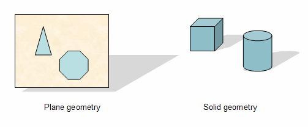

The study of geometry can be broken into two broad types: plane geometry, which deals with only two dimensions, and and solid geometry which allows all three. The world around us is obviously three-dimensional, having width, depth and height, Solid geometry deals with objects in that space such as cubes and spheres.
Plane geometry deals in objects that are flat, such as triangles and lines, that can be drawn on a flat piece of paper.

In plane geometry, all the shapes exist in a flat plane. A plane can be thought of an a flat sheet with no thickness, and which goes on for ever in both directions. It is absolutely flat and infinitely large, which makes it hard to draw. In the figure above, the yellow area is meant to represent a plane. In the figure, it has edges, but actually, a plane goes on for ever in both directions.
Objects which lie in the same plane are said to be 'coplanar'. See Defintion of coplanar.
Plane geometry, and much of solid geometry also, was first laid out by the Greeks some 2000 years ago. Euclid in particular made great contributions to the field with his book "Elements" which was the first deep, methodical treatise on the subject. In particular, he built a layer-by-layer sequence of logical steps, proving beyond doubt that each step followed logically from those before.
Geometry is really about two things:
Clearly, our world is three dimensional. But in the fictional story Flatland by Edwin Abbott, he speculates what living in a two-dimensional world (a plane) would be like. It's a fun diversion from the strict factual logic of mathematics. Surprisingly for a science fiction story, it was written in 1884, and his writing style is quaintly Victorian as a result. An excerpt from Chapter 1: